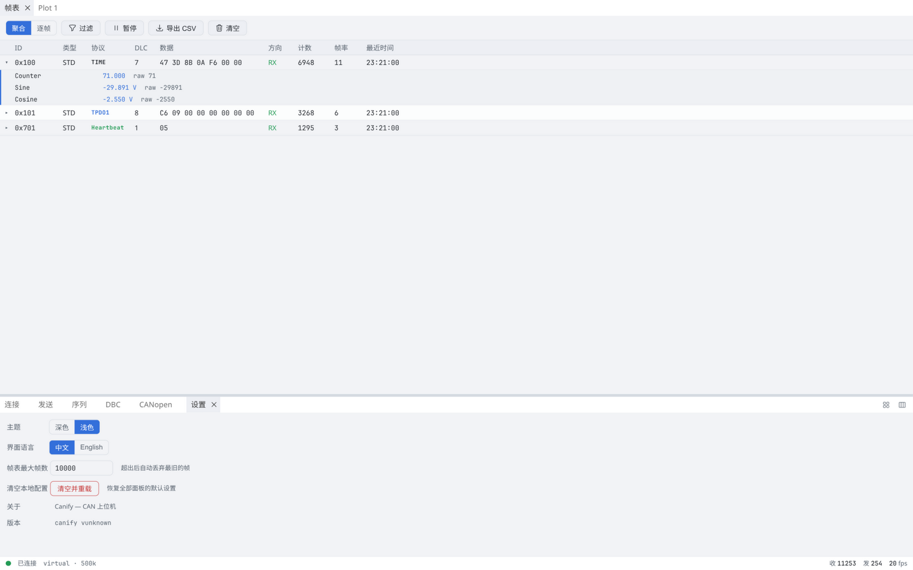
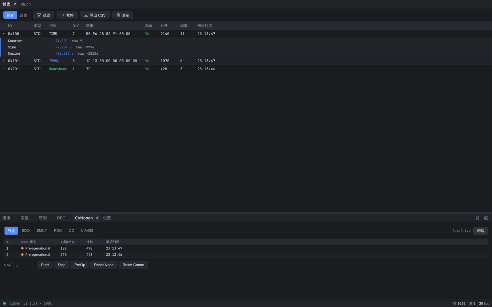
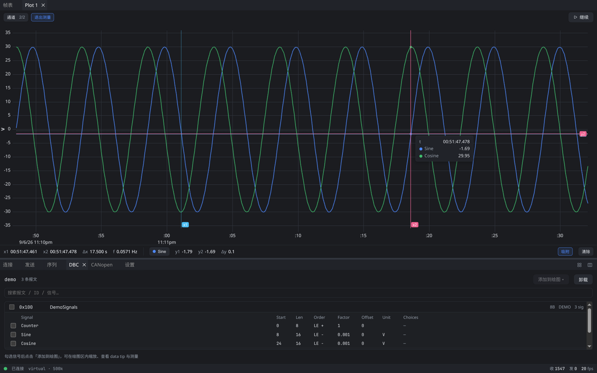
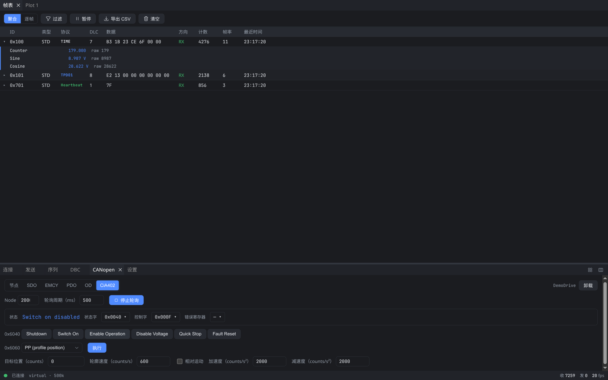
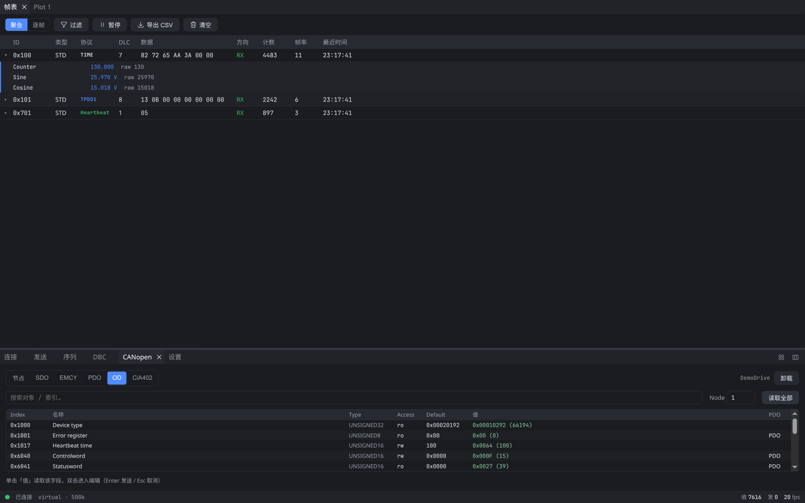
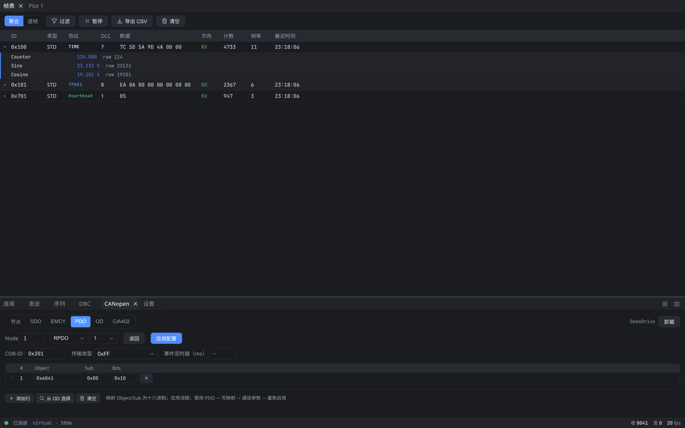
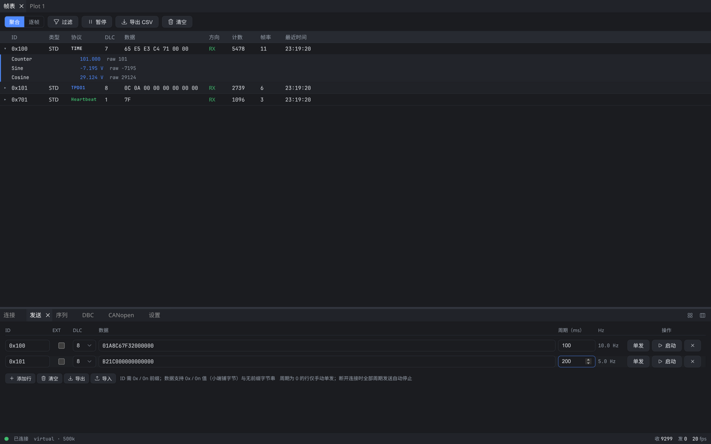
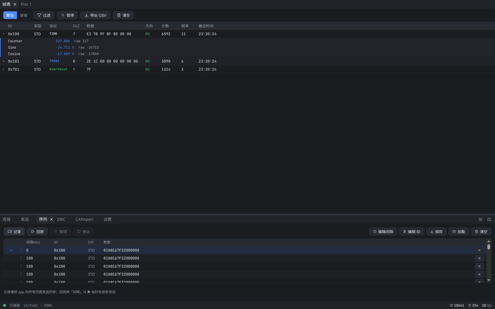

现代、轻量的
CAN / CANopen 上位机
连接一块十几块钱的 SLCAN 适配器，即可完成总线监控、DBC 信号解码、实时绘图、报文发送与 CANopen 节点调试。安装即用，数据只留在本机。

为高效调试而生
从总线监控到伺服调试，Canify 把常用工具装进一个轻量原生应用。
可停靠的现代界面
显示区与控制区自由分屏、拖拽重组，布局自动记忆；深色 / 浅色主题与中英界面一键切换。
DBC 解码 + 实时绘图
导入 DBC 后帧表内直接展开物理值信号；勾选即绘图，LTTB 降采样让高负载总线依旧流畅。
CANopen 一站式
节点表、SDO 日志、EMCY、对象字典、PDO 配置、CiA 402 伺服控制——被动解码与主动调试一体。
序列录制与回放
录制应用内发出的所有帧（含 SDO / NMT 操作），按原时序回放，复现问题或自动化测试从未这么简单。
强大的实时过滤
ID 列表 / 区间与数据字节条件多路组合（AND / OR），在嘈杂总线中一眼锁定目标报文。
轻量 · 纯本地
Tauri 2 + Rust 原生构建，安装包小、启动快；无云端、无遥测、无外联请求。
CANopen 调试，
在这里一站式完成
无论是接入一条陌生总线做被动观察，还是调试一台 CiA 402 伺服驱动器，Canify 都把完整工具链放在同一个面板里。
- 节点表自动识别：NMT 状态、心跳间隔一目了然
- SDO 事务日志：请求 / 响应自动配对，ABORT 原因直接翻译
- 导入 EDS 浏览对象字典：单点读写、一键读取全部
- PDO 配置编辑器：按规范流程一键下发映射与通信参数
- CiA 402 控制：状态机可视化 + 使能序列 + 运动参数，首用安全确认

界面一览
点击任意截图可放大查看。






支持的硬件
标准 slcan 协议，市面上最常见、最便宜的一类 CAN 适配器开箱即用。
- CANable / MKS CANable / cantactSLCAN 固件 · 约 ¥100 内
- Arduino + CAN 扩展板MCP2515 / MCP2518 · SLCAN 固件
- 任意 slcan 协议串口设备Linux /dev/ttyUSB* · Windows COM
- 虚拟总线（内置）回环模式 · 无硬件体验全部功能
SocketCAN（Linux can0）已在路线图中，敬请期待。
与同类工具相比
每个工具都有自己的定位，这里只陈述事实。
| 工具 | 平台 | 硬件支持 | DBC 解码 + 绘图 | CANopen 主动调试 | 序列录制 / 回放 | 授权 |
|---|---|---|---|---|---|---|
| Canify | Windows · Linux | SLCAN + 虚拟总线 | ✓ | ✓ 含 PDO 配置与 CiA 402 | ✓ 录制回放应用内全部发送 | 免费（闭源） |
| CANgaroo | Windows · Linux | 广泛（Vector / PEAK / Kvaser / gs_usb 等） | ✓ | — | 部分 * 日志文件回放 | 开源 (GPL) |
| CANviz | Windows · macOS · Linux | gs_usb / SLCAN / SocketCAN | ✓ | 部分 * 快捷 SDO / NMT / 402 按钮 | — | 开源 (MIT) |
| PCAN-View | Windows | 仅 PEAK 硬件 | 部分 .sym 符号 | — | — | 免费（闭源） |
* CANviz 提供 expedited SDO、NMT 与 CiA 402 快捷按钮，但不包含 PDO 配置编辑器与分段 SDO；CANgaroo 支持以 ASC / candump / PCAP 日志文件回放总线数据，而 Canify 的序列功能直接录制应用内发出的每一帧（含 CANopen 操作）并按原时序回放。表格信息整理自各项目公开文档。
常见问题
Canify 收费吗？
免费使用：无需注册、无功能限制。
支持 CAN FD 吗？
暂不支持 CAN FD 帧收发，已在路线图中；当前帧数据模型为 FD 预留了载荷长度。
支持 macOS 吗？
暂未提供 macOS 安装包，已在路线图中。
我的数据会上传吗？
不会。Canify 完全本地运行：无云端、无遥测、无任何外联请求，总线数据只存在于本机内存。
Linux 打开串口提示权限不足？
将用户加入 dialout（Debian/Ubuntu）或 uucp（Arch）组后重新登录即可：sudo usermod -aG dialout $USER
开放源代码吗？
Canify 是免费但闭源的软件，以二进制安装包发布。问题反馈与功能建议欢迎到 GitHub Issues 提出。